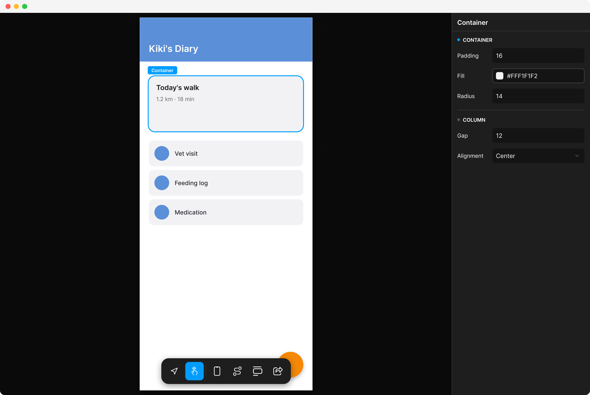
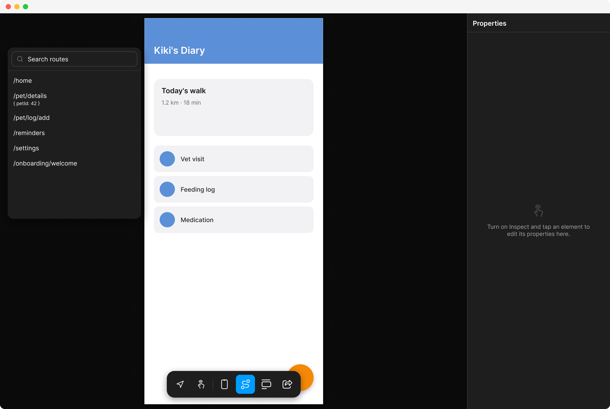
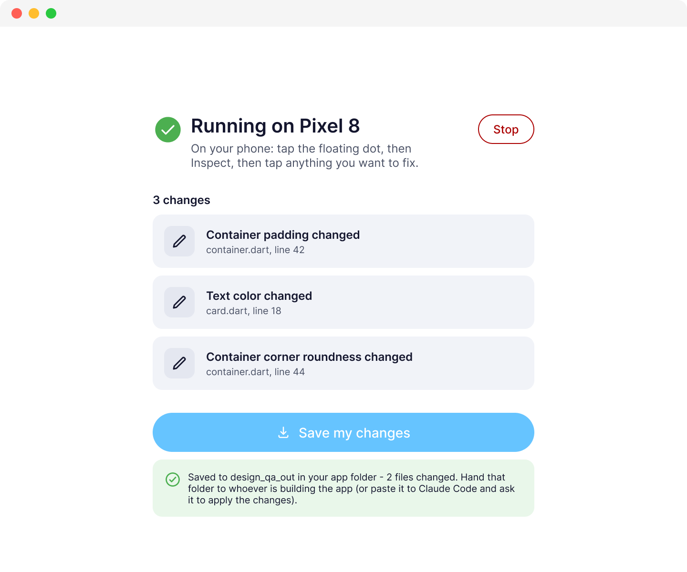
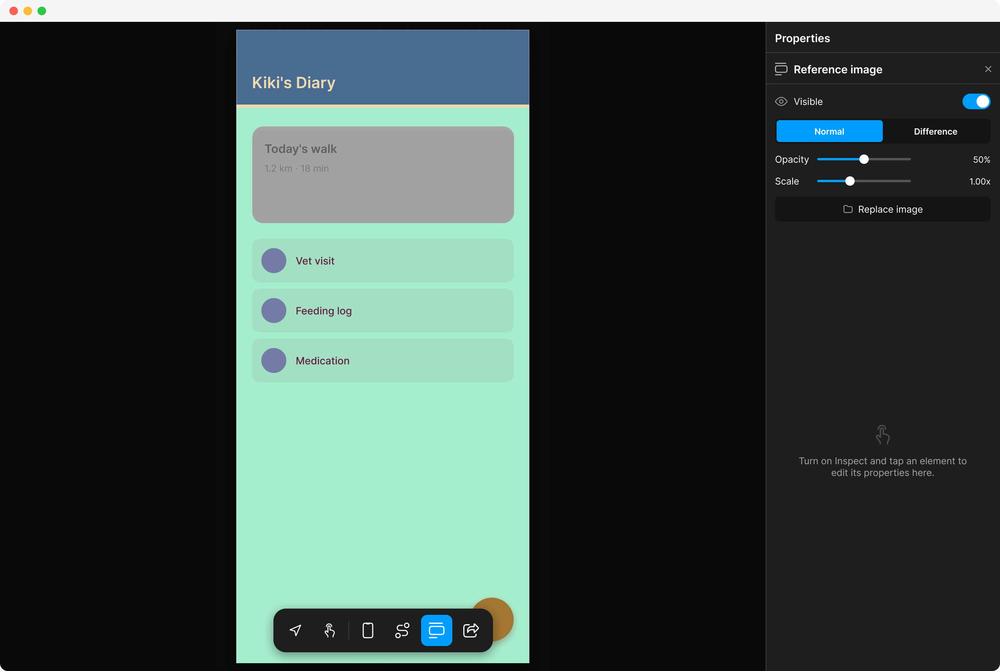

Fix the design.
Not the prompt.
A live visual overlay for Flutter. Tap any widget on your running app, tune padding, color, and radius by hand, and export clean AST Dart patches back to your codebase.



20px → spacing.lg (24)


design_qa_out/
Why prompting pixels breaks your flow.
AI is great at generating full features, but terrible at moving a margin by 4 pixels. Here is the loop you’re stuck in today — and how Vera deletes it.
Describing Pixels in English
-
1
AI generates the screen
Cursor or Claude writes the entire Dart file in one pass.
-
2
Visual drift slips through
Button padding is 18px instead of 24px. Radius is off by 2. Colors almost match.
-
3
Write a clarifying prompt
"Make the card padding a bit larger and align the avatar to the left."
-
4
Wait for rebuild & hope
The AI changes unrelated code, re-renders, and padding is now 16px. Repeat.
Direct Visual Correction
-
1
Tap the widget on screen
Select any component on your running Flutter app or simulator.
-
2
Live property inspector opens
Bound directly to its real
RenderObject, so nothing needs rebuilding. -
3
Scrub sliders or tap token fix
Drag padding to 24, pick
colors.primaryfrom your design tokens. -
4
Export clean AST code patch
Vera writes an exact Dart patch and changelog to your project directory.
Everything you need to ship pixel-perfect UI.
Vera edits the actual running widgets on real devices, not a mockup or an approximation of them.


design_qa_out/
Zero terminal required for designers.
If you’re a designer or product manager who doesn't want to run shell commands, the companion macOS app automates the entire review cycle:
Point to any Flutter project folder.
Vera inspects main() and sets up tokens safely.
Picks a simulator/device, runs the app, and exports patches.
Byte-for-byte identical in production builds.
DesignQA.wrap executes inside a kDebugMode guard. In release and profile builds, Flutter and Dart's AOT tree-shaker removes the entire overlay codebase completely.
We measured the compiled binary directly:
| Build Target (App.framework) | Binary Size |
|---|---|
flutter build macos --release (Standard) |
6,906,368 bytes |
flutter build macos --release (With Vera) |
6,906,368 bytes |
| Production Binary Difference | 0 Bytes (Exact Match) |
Start fixing UI in under 30 seconds.
Add Vera to any Flutter project with a single automated wrapper call, the only change it makes to your app code.
# 1. Add Vera as a dev dependency
flutter pub add --dev design_qa
# 2. Automatically wrap root widget & scan tokens (asks first)
dart run design_qa:init
# 3. Run with widget creation tracking enabled
flutter run --track-widget-creation--track-widget-creation?
This standard Flutter debug flag allows Vera to map any tapped widget on your screen directly back to the exact source file and line number for AST patch exports.